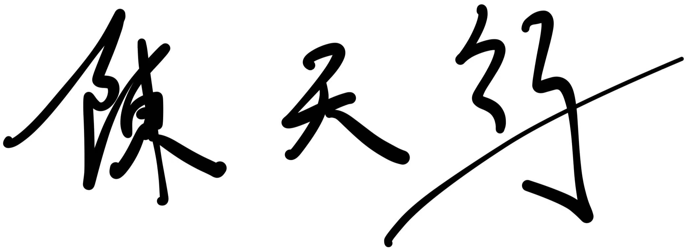
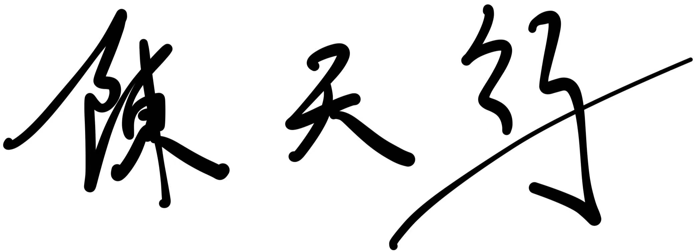

RoboTwin Dual-Arm Collaboration Challenge
Tianxing CHEN (陈天行)Final Year Undergraduate Student @ SZUEmbodied AI Student Researcher 🦾 |
Tianxing CHEN (陈天行)Final Year Undergraduate Student @ SZUEmbodied AI Student Researcher 🦾 |